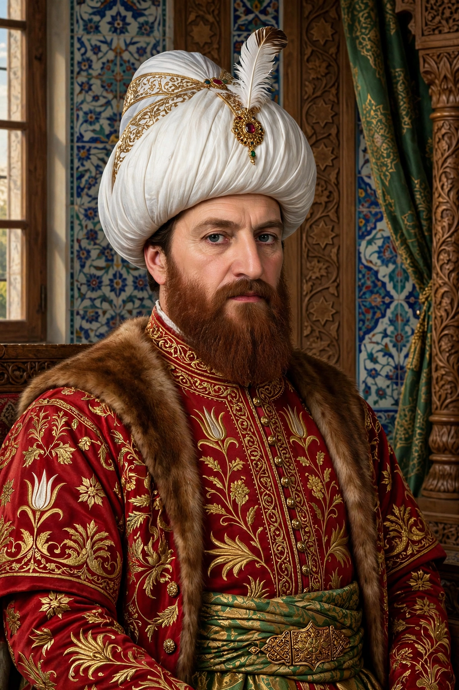

| Bayezid I | |
|---|---|
| Reign | 16 June 1389 – 20 July 1402 |
| Born | c. 1360, Bursa |
| Died | 8 March 1403, Akşehir (in captivity) |
| Epithet | Yıldırım — "the Thunderbolt" |
| Predecessor | Murad I |
| Successor | Interregnum; then Mehmed I |
Bayezid I (Ottoman Turkish: بايزيد اول; c. 1360 – 8 March 1403), nicknamed Yıldırım ("the Thunderbolt") for the speed of his campaigns, was the fourth sultan of the Ottoman Empire, reigning from 1389 until his capture by Timur in 1402. His reign saw rapid expansion in both Anatolia and the Balkans — and ended in catastrophe that nearly destroyed the Ottoman state.

Bayezid succeeded his father Murad I, who was killed at the Battle of Kosovo in 1389; Bayezid had his younger brother Yakub executed on the field — the first recorded Ottoman royal fratricide. He then raced east to annex the Anatolian beyliks, before returning west: he crushed a crusade led by Sigismund of Hungary at the Battle of Nicopolis (1396), subdued Bulgaria, raided into Hungary and Greece, and imposed the first sustained Ottoman blockade of Constantinople.
His annexations in eastern Anatolia brought him into collision with the Turco-Mongol conqueror Timur (Tamerlane). At the Battle of Ankara on 20 July 1402, Bayezid's army was destroyed — his Tatars defected and his exhausted troops were outmanoeuvred — and the sultan himself was captured. He died in captivity at Akşehir in March 1403, according to tradition of grief and humiliation. Timur restored the Anatolian beyliks, and Bayezid's sons plunged the empire into the eleven-year Ottoman Interregnum.
Bayezid built extensively in Bursa, including the Ulu Cami (Grand Mosque), and began the transformation of the Ottoman polity from a frontier principality into a centralised empire — a project his great-grandson Mehmed II would complete.
Ottoman Interregnum · Battle of Ankara · Timur · Battle of Nicopolis